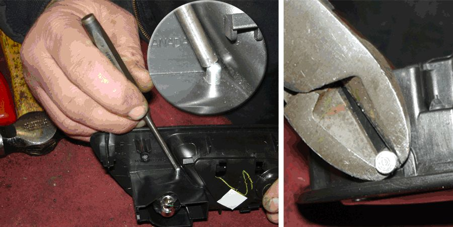
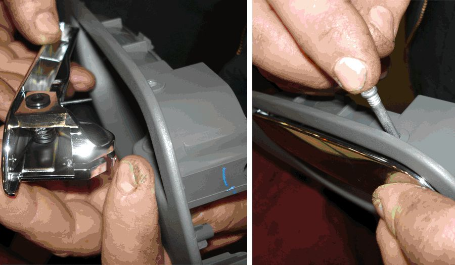
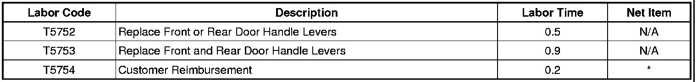

Campaign - Front And Rear Chrome Interior Door Handle: Overview
SPECIAL COVERAGEBulletin No.: 09239B
Date: June 28, 2011
Subject: 09239B - Special Coverage Adjustment - Front and Rear Chrome Interior Door Handle Lever
Models:
2007 Cadillac Escalade, Escalade ESV, Escalade EXT
2007 Chevrolet Avalanche, Silverado, Suburban, Tahoe
2007 GMC Sierra, Yukon, Yukon XL
Equipped with Chrome Interior Door Handles
Supercede:
The population for this Special Coverage has been expanded to include additional vehicles.Please discard all copies of bulletin 09293A, issued August 2010.
Condition
Some customers of 2007 model year Cadillac Escalade, Escalade ESV, Escalade EXT; Chevrolet Avalanche, Silverado, Suburban, Tahoe; GMC Sierra, Yukon, and Yukon XL vehicles may comment about peeling on the top surface of the front or rear chrome interior door handle(s). A chrome plating irregularity combined with direct sunlight exposure may cause the plating to separate from the top surface of the handle on certain vehicles.
Special Coverage Adjustment
This special coverage covers the condition described above for a period of 10 years or 100,000 miles (160,000 km), whichever occurs first, from the date the vehicle was originally placed in service, regardless of ownership or mileage.
Dealers are to replace the front and/or rear chrome interior door handle levers if signs of peeling are present. The repairs will be made at no charge to the customer.
For vehicles covered by Vehicle Service Contracts, all eligible claims with repair orders on or after July 16, 2010, are covered by this special coverage and must be submitted using the labor operation codes provided with this bulletin. Claims with repair orders prior to July 16, 2010, must be submitted to the Service Contract provider.
Vehicles Involved
Involved are certain 2007 model year Cadillac Escalade, Escalade ESV, Escalade EXT; Chevrolet Avalanche, Silverado, Suburban, Tahoe; GMC Sierra, Yukon, and Yukon XL vehicles.
Important
Dealers are to confirm vehicle eligibility prior to beginning repairs by using the Investigate Vehicle History link on the Global Warranty Management application within GlobalConnect. Special Coverage Adjustments are displayed in the Applicable Warranties section.
Parts Information
Parts required to complete this special coverage are to be obtained from General Motors Customer Care and Aftersales (GMCC&A).
Customer Notification
General Motors will notify customers of this special coverage on their vehicles (see copy of typical customer letter included with this bulletin - actual divisional letter may vary slightly).
Service Procedure
Note
Replace door handle levers if signs of peeling are present.
Note
The handle kit contains two door handle levers, replace both sides.
Front Side Door Inside Handle Replacement
1. Remove the driver and passenger front side door inside handles. Refer to Front Side Door Inside Handle Replacement in SI.
2. Place front door inside handles on a work bench.

Note
Using the punch and hammer, strike the rounded end of the roll pin to loosen the roll pin. The head of the roll pin should protrude from the handle housing. Remove the roll pin with pliers as shown in the illustration.
3. Using a punch, hammer, and pliers, remove the roll pin from the inside door handle.
4. Discard the roll pin.

5. Install the new roll pin that is included in the door handle kit, P/N 88880051.
6. Install the front side door inside handles. Refer to Front Side Door Inside Handle Replacement in SI.
Rear Side Door Inside Handle Replacement
1. Remove the driver and passenger rear side door inside handles. Refer to Rear Side Door Inside Handle Replacement in SI.
2. Place rear side door inside handles on a work bench.
Note
Using a punch and hammer, strike the rounded end of the roll pin to loosen the roll pin. The head of the roll pin should protrude from the handle housing. Remove the roll pin with pliers as shown in the illustration.
3. Using a punch, hammer, and pliers, remove the roll pin from the inside door handle.
4. Discard the roll pin.
5. Install the new roll pin that is included in the door handle kit, P/N 88880051.
6. Install the rear side door inside handles. Refer to Rear Side Door Inside Handle Replacement in SI.
Customer Information
1. Submit a claim using the table below.

* The amount identified in "Net Item" should represent the dollar amount reimbursed to the customer.
Customer Reimbursement - For US
All customer requests for reimbursement for previous repairs for the special coverage condition will be handled by the Customer Assistance Center, not by dealers.
A General Motors Customer Reimbursement Procedure and Claim Form is included with the customer letter.
Important
Refer to the GM Service Policies and Procedures Manual, section 6.1.12, for specific procedures regarding customer reimbursement and the form.
Customer Reimbursement - For Canada
Customer requests for reimbursement of previously paid repairs to correct the condition covered under this Special Coverage are to be submitted to the dealer prior to or by July 31, 2012. Repairs must have occurred within 10 years of the date the vehicle was originally placed in service.
When a customer requests reimbursement, they must provide the following:
- Proof of ownership at time of repair.
- Original paid receipt confirming the amount of unreimbursed repair expense(s) (including Service Contract deductibles), a description of the repair, and the person or entity performing the repair.
If the work was done by someone other than a GM dealership, the amount of reimbursement will be limited to the amount that the repair would have cost GM to have it completed by a GM dealership.

Disclaimer